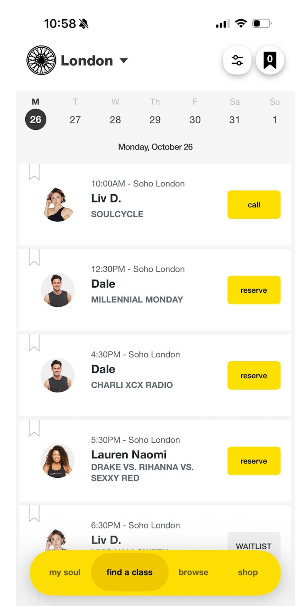
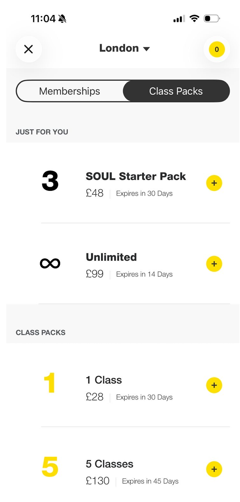
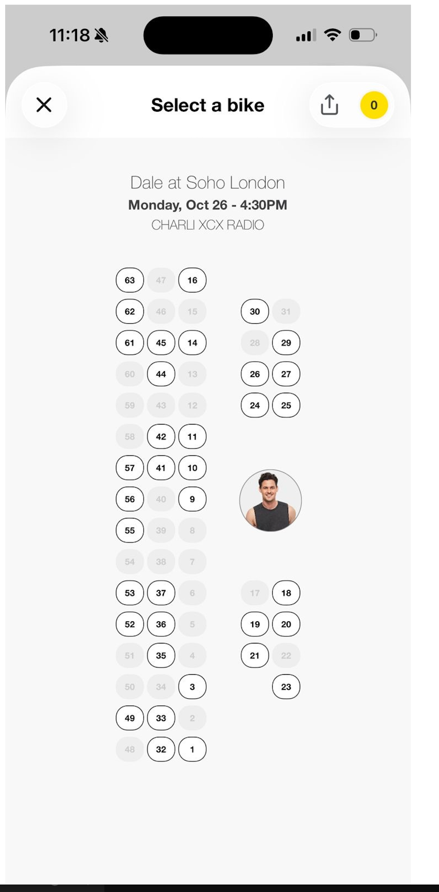

Napravio sam prototip (samo mock data), ali pravi sustav (plaćanje, hosting, tvoja stranica) još nije napravljen.
Tri koraka: isprobaj prototip, odgovori na pitanja ispod i označi da ili ne u tablici.
Ovo je napravljeno do sada. Podaci su lažni, cijene su placeholderi i plaćanja nema. Radi i na mobitelu.
Isprobaj redom:
Račun mijenjaš izbornikom "Demo račun". Prijave i uloga nema, sve tri stranice vidi svatko. Sve što klikneš ostaje samo u tvom pregledniku. Na adminu gumb "Resetiraj demo" vraća početno stanje. Napiši mi što ti se ne sviđa ili što fali.
Gore desno su prekidač za tamni način i gumb (i) s adresom, telefonom i radnim vremenom. Te podatke sam preuzeo s tvoje stranice 26.10., provjeri jesu li točni.
U prototipu nema pravog plaćanja (kupnja je simulacija), Sculpt Rooma ni "dovedi prijatelja". Honorar od 20 € po treningu i bonus u Izvještajima su probni iznosi, ne dogovoreni.
Fiskalizaciju provjeravam s računovođom. Plaćanje karticom ne ide u pogon dok to nije riješeno. Račune (Stripe, domena, baza, hosting, mail) otvaramo na ime Točkice, a ja sam dodan kao admin.
Ponedjeljkom u 10:00 otvara se novih 14 dana. Dan, sat i broj tjedana postavljaš ti u adminu. Kartica: trener, vrijeme, ime treninga, tema.

Referenca iz tvoje poruke. Preuzimamo raspored, ne boje ni brand.
Paketi s rokom, jednokratni (npr. 5 treninga, 45 dana). Jedan kredit je jedan bicikl. Bez automatske mjesečne naplate.
Neograničeni paket Na screenshotu postoji (14 ili 30 dana). Želiš li ga u prvoj verziji?

Referenca iz tvoje poruke. Preuzimamo raspored, ne cijene ni valutu.
Oznaku postavljaš ti ili recepcija, ne korisnik. Nema koda, pa se ne može prenijeti. Svaki proizvod ima standardnu i Multisport cijenu, fiksne iznose.
Ugovor Čekamo odgovor Benefit Systemsa: plaća li po ulazu i smije li se naplaćivati popust unaprijed. Ako dodatna naplata nije dopuštena, Multisport otpada. Prva verzija izlazi samo sa standardnim cijenama, a Multisport cijena i oznaka ostaju osmišljeni, ali neizrađeni.
Dva zasebna paketa: 1 trening za 10 € i 3 treninga za 30 €. Svaki se kupuje jednom po računu, a mogu se kupiti oba. Vide ih samo računi koji još nisu kupili običan paket.
Plan sobe po tvojoj skici: 20 bicikala u dva stupca po 10, s prolazom nakon petog reda. Instruktor je desno u sredini. Desni stupac je 1 do 10, lijevi 11 do 20, oba odozdo prema gore. Plan se otvara u prozoru kad pritisneš rezerviraj. Zauzeti su sivi. Instruktor je označen markerom, fotografija nije potrebna. Nema limita koliko bicikala rezerviraš, samo trebaš kredite.
Numeracija Potvrdi brojeve na slici koju ti šaljem.

Referenca iz tvoje poruke. Preuzimamo način odabira, ne broj bicikala s ove slike.
Jedan račun, više bicikala. Svaki bicikl je zasebna rezervacija. Ime gosta upisuješ tek kad uključiš "Rezerviram za nekoga drugog".
Otkazivanje do 6 sati prije vraća kredit. Kasnije ili no-show oduzima kredit, čak i ako lista čekanja popuni bicikl. Kredit možeš ručno vratiti.
Kad su svih 20 bicikala puno, ide se na listu čekanja. Kad netko otkaže, svi s liste dobiju mail. Tko prvi rezervira, dobiva bicikl. Tko već ima bicikl na tom treningu, ne može na listu čekanja.
Recepcija označava Rezervirano, Došao, No-show, Otkazano (kredit se vraća) i Kasno otkazano (ne vraća se). Kredite vraćaš samo ti, u adminu. Recepcija može poništiti zadnju oznaku u prvih 5 sekundi.
Troši se paket koji najranije ističe. Vraćeni kredit vrijedi do kasnijeg od dva datuma: isteka paketa ili 7 dana od vraćanja.
Predlažem 7 dana. Može se promijeniti.
Odlučeno: Stripe, jer nemaš ugovor ni s kim. Naknada je 1,5 % + 0,25 € za kartice iz EEA. Corvus (0,5 % po transakciji, minimum 30 € mjesečno plus PDV) otpada.
Za otvaranje računa treba pravni oblik studija (d.o.o. ili obrt) i ovlaštena osoba. Kartice ne idu u pogon dok se ne razjasni fiskalizacija, a to provjeravam s računovođom. Gotovina na recepciji radi odmah.
Računi iz starog sustava se ne prenose. Klijenti se registriraju iznova. Prije pokretanja unosiš preostale treninge i rok. Za manje od 50 ljudi ručni unos je brži.
U prototipu: kartica Izvještaji, Isplata. Odabereš mjesec (od 1. do zadnjeg dana) i vidiš po treneru koliko je treninga držao, koliko je ljudi došlo na svaki, koga je mijenjao i tko je njega mijenjao. Zamjenu upisuješ na treningu, a plaća ide onome tko ga je vodio, po njegovoj cijeni. Bonus: 2 € za svaki bicikl s dolaskom iznad 15 od 20, gosti se broje.
Plaća se samo održan trening. Otkazani i oni koji tek slijede se ne plaćaju. Honorar vrijedi od dana kad ga promijeniš, pa se prošli treninzi ne mijenjaju. Za svakog trenera možeš poslati sažetak i označiti isplaćeno. Ako se iznos promijeni nakon isplate, vidiš upozorenje.
Izvještaj je točan samo ako recepcija označi dolaske. Neoznačeni treninzi se prikažu na vrhu.
Bonus je potvrđen: prag 15 i 2 € po biciklu iznad praga (16 bicikala je 2 €, 18 je 6 €).
Cijene Honorar po treningu za svakog trenera (sada probnih 20 €). Treba li treneru uz broj i popis treninga?
Trener plaća 100 € mjesečno, ti ručno označiš plaćeno. Dok je plaćeno: do 2 sata dnevno, do 30 dana unaprijed, termini se ne preklapaju.
Što dobiva Što trener dobiva za 100 €?
U prototipu: Izvještaji, Klijenti. Najpopularniji termin i trener (broje se rezervacije, i gosti). Vožnje po klijentu s trakom do 50. i 100. sata, a tko je najbliže, vidi se prvi. Klijenta pretražiš po imenu i vidiš prvi i zadnji dolazak, najčešće treninge i trenere. Vožnje se računaju samo za vlasnika računa, gosti se ne broje. Kad recepcija označi dolazak na 50. ili 100. sat, pojavi se zelena poruka.
| Prijedlog | Što znači | Da ili ne |
|---|---|---|
| Studio otkazuje trening | Kredit se vraća svima, jedan mail. U prototipu u Adminu. | |
| Prijava bez lozinke | Kod na mail. Ime, mail i telefon pri registraciji. | |
| Tjedni predložak rasporeda | Jedan tjedan iz kojeg nastaje svaki sljedeći. | |
| Početni klijenti (točka 12) | Unos preostalih treninga prije pokretanja. | |
| Uvjeti i privatnost | Obavezno prije pokretanja. Tvoj nacrt je osnova, mi dodajemo pravila platforme (6 sati, rok, vraćeni kredit, povrat novca, privatnost), ti ili pravnik odobrite. | Obavezno |
Provjerio sam Glofox, bsport, Momence, Eversports, Mindbody, Wellness Living, Hapana i Anolla. Nijedna ne navodi Corvus Pay, trošenje paketa po isteku ni Multisport popust.